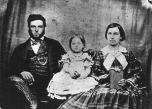

Dull Family Portrait, Washington and Lee University
| Before the Civil War, John and Jane Dull lived in Augusta County, Virginia, with their daughter Cornelia. John Dull enlisted as a private in Company D of the 5th Virginia Infantry in October 1864. He served in the Valley of Virginia and later in eastern Virginia near Petersburg. After five months of service, Dull died in battle in March 1865. Jane either remarried or left Augusta because there is no listing for Jane Dull in the 1870 Census. |
|
the most likely matches in the Valley of the Shadow databases: |
Dull Family: 1860 Census | Military Service
In this collection of sixteen letters written in late 1864 and early 1865, John Dull writes to his wife Jane ("Giney") Dull about his life in camp, his efforts to visit home, and his trust in God. The collection covers Dull's entire term of service.
Return to the War Years Personal Papers